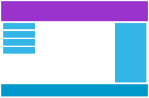

Responsive web design permite que uma página web apareça adequadamente em todos os equipamentos apenas com recurso a CSS e HTML sem necessidade ou recurso a javascript.
Desenhar experiências para todos os utilizadores¶
As páginas web não podem deixar de fora conteúdo para serem apresentadas em ecrãs pequenos, mas sim adaptar-se ao tamanho dos equipamentos: desktop, tablet e telefone. Menus, imagens, layout de colunas são alguns do principals elementos a de uma página a adaptar.

DesktopTablet
Telefone
Responsive web design vem da capacidade de usar CSS e HTML para redimensionar, esconder, encolher, alargar ou move o conteúdo de uma página para que esta tenha um visualização adequada em qualquer ecrã.
Usar valores % na dimensão de alguns elementos já permite dotar a página de um comportamento responsive, mas em regra queremos adaptar fundamentalmente o seguinte
- menu
- layout da página
- dark mode
CSS Syntax¶
@media not|only mediatype and (media feature) {
// CSS Code;
}
As regras CSS usadas para responsive web design são definidas em media queries. São regras CSS que são interpretadas de forma condicional, como por exemplo, ecrãs com uma largura até 480px.
@media screen and (max-width: 480px) {
// CSS Code;
}
Ou por exemplo formatar o fundo de uma página quando o utilizador estiver em dark mode.
@media (prefers-color-scheme: dark) {
body {
background-color: black;
}
}
Existem duas abordagens principais para aplicar as medias queries ao CSS. Mobile based quando todo o CSS de uma página está pensado para a versão mobile da página e as medias queries vão adaptando o site aos ecrãs maiores. Por seu lado numa abordagem desktop based o CSS do site é pensado para a versão base em desktop, e depois as media queries vão adaptando a página para os ecrãs mais pequenos.
Media queries for a mobile based CSS¶
@media screen and (min-width: 480px) {
body {
background-color: lightgreen;
}
}
Media queries for a desktop based CSS¶
@media screen and (max-width: 768px) {
body {
background-color: lightgreen;
}
}
Exemplo de responsive¶
HTML¶
<!doctype html>
<html>
<head>
<title>Responsive Site</title>
<meta charset="utf-8" />
<meta http-equiv="Content-type" content="text/html; charset=utf-8" />
<meta name="viewport" content="width=device-width, initial-scale=1" />
<link rel="preconnect" href="https://fonts.gstatic.com">
<link href="https://fonts.googleapis.com/css2?family=Montserrat:wght@100;300&display=swap" rel="stylesheet">
<link rel="stylesheet" href="https://cdnjs.cloudflare.com/ajax/libs/font-awesome/4.7.0/css/font-awesome.min.css">
<link rel="stylesheet" type="text/css" href="./css/styles.css">
<link rel="stylesheet" type="text/css" href="./css/mobile.css">
<style type="text/css">
</style>
</head>
<body>
<nav>
<i class="bi bi-three-dots-vertical"></i>
<ul>
<li>About</li>
<li>Services</li>
<li>Products</li>
<li>Contact</li>
</ul>
</nav>
<div class="imageDiv">
</div>
<div class="grid">
<div>A</div>
<div>B</div>
<div>C</div>
</div>
</body>
</html>
CSS & Media queries¶
nav li {
display: inline-block;
padding: 4px;
}
nav i {
display: none;
}
.imageDiv {
width: 100%;
height: 200px;
background-image: url("images/img-desktop.jpg");
background-size: cover;
}
.grid {
display: flex;
justify-content: space-around;
flex-wrap: wrap;
margin-top: 6px;
gap: 8px;
}
.grid div {
width: 180px;
height: 140px;
background-color: rgb(86, 123, 123);
}
@media screen and (max-width: 576px) {
/*** CSS Rules that apply only for screens up to 768px ***/
body {
background-color: rgb(0, 0, 0);
color: white;
}
nav i {
display: inline-block;
}
nav ul {
display: none;
}
.imageDiv {
height: 400px;
background-image: url("images/img-mobile.jpg");
}
.grid div {
width: 100%;
}
}